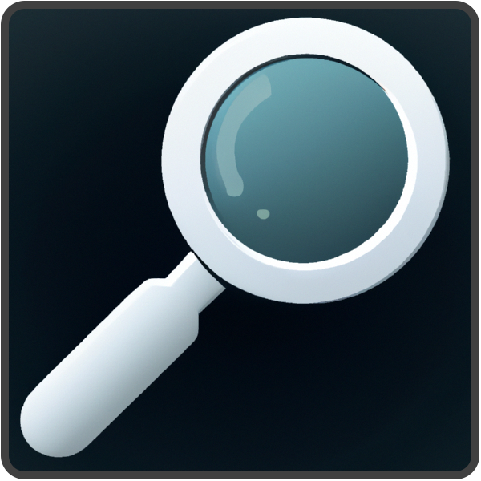

Element Notifier Help Page
Content Table
What are and how to use different types of elements in order to find specific items on monitored pages;
Steps to troubleshoot and refine your monitoring elements;
Simple baked in tool to help you out creating a selector element;
Intro
This is a simple tool to check a page if an element exsists or appears and if so, it will send a notification using the OS notification system.
When you first access the extension, the icon is hidden under the "Extensions" button ont the browser toolbar (as highlited in the agissant image)
You can now if you wish, click on the pin icon in order to stick the extension on the toolbar or (left) click the  icon in order to access the user intervace (UI) of the extension.
The following list will tell you what each element of the UI does:
- "Add/Remove Current URL" button will add the active tab URL into the monitoring list. Clicking it again, will remove the URL if you are on the same page as the URL.
- "Attribute field" is where you have to add the element type you want to check for (i.g. class, id, [custom attibute]...).
- "Value field" must contain the value of the type/attribute put in Attribute field (i.e. for a div element with class="column", you insert column).
- "Add" button will append the entries of Atribute and Value fields into the elements to track list. (Note: If you try to add the same combination of Atribute and Value twice, the entries will be removed from the list.
- "Timer field" and "Set button" sets the frequency of the monitoring cycles. There is a minimum of 60 and a maximum of 900 seconds (1 - 15 minutes).
- "Remove button" will remove it's associated item (i.e. for Attribute/Value entris, will delete the gruop of two)
- "Help button" will open a new tab displaying this page.
Running it
Finding the attribute
Before starting to check for stuff, you need to know what to search for. In general there are two ways to gather information:
There are two ways that you can gather the attribute you need and it's value.
Browser Dev tools
- Go to the page you want to monitor.
- Press F12 key on the keyboard to open the Development Tool in your browser.
- Click on selection tool in the Development tool.
- Select the object (element) you want to find on the page you want to monitor.
- In Delevopment Tool, check the attributes for the object you selected and try to find unique items.
- In Development Tool, press ctrl+f to make the find bar appear.
- Search the attribute you think is unique and check if there are more objects (elements) on that page.
- If the found element(s) is the one that you want, add them to the extension Attribute and Value fields.
- If not, try other combinations and other types of attibutes
Selector tool (alpha state!)
- Go to the page you want to monitor.
- Press ctrl+shift+E keys on the keyboard to start the selector tool from the EM extension. If you hover on different elements of the website, a red outline will appear.
- When you found the element you want, click on it.
- Select the object (element) you want to find on the page you want to monitor.
- In Delevopment Tool, check the attributes for the object you selected and try to find unique items.
- In Development Tool, press ctrl+f to make the find bar appear.
- Search the attribute you think is unique and check if there are more objects (elements) on that page.
- If the found element(s) is the one that you want, add them to the extension Attribute and Value fields.
- If not, try other combinations and other types of attibutes
Do it
Important note: If you don't know how to get the attibute and it's value for the next section, please check Finding the element section before going forward.
In order to set up a monitor you have to:
- Open a Tab with the desiered page (or if you already have it open, make the tab active);
- Open the extension popup;
- Click on Add/Remove current URL button;
- Add the attribute of the element you want to monitor in Attribute field;
- Add the value of the attrubute you want to monitor in Value field;
- CLick on Add button